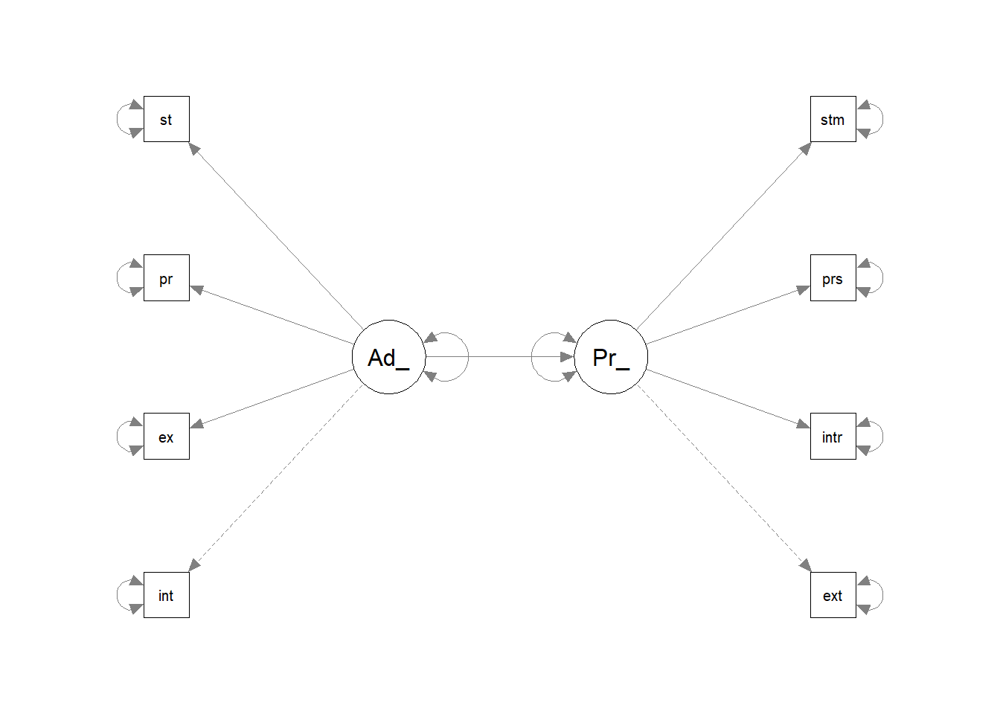
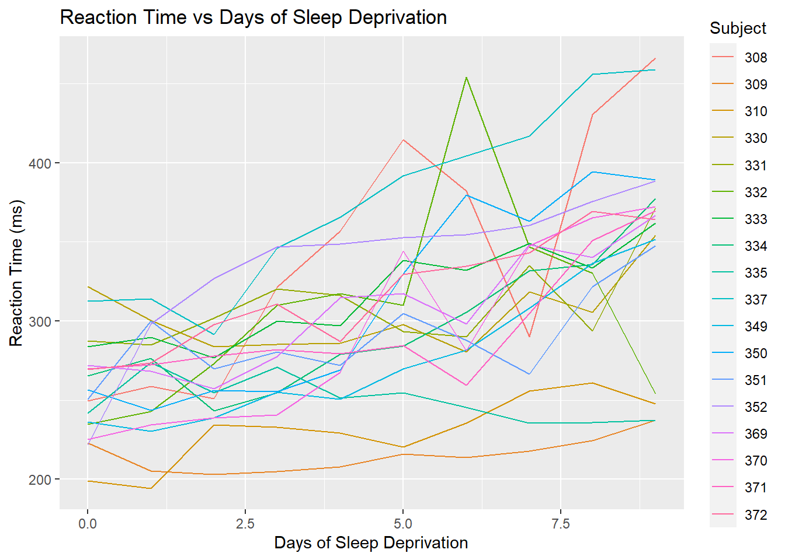
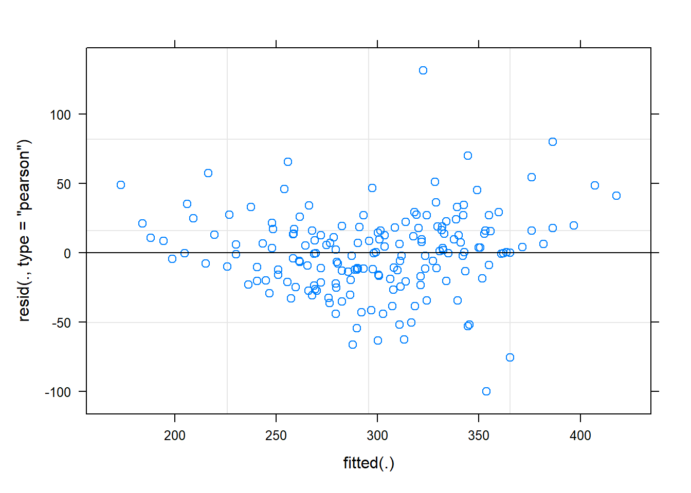
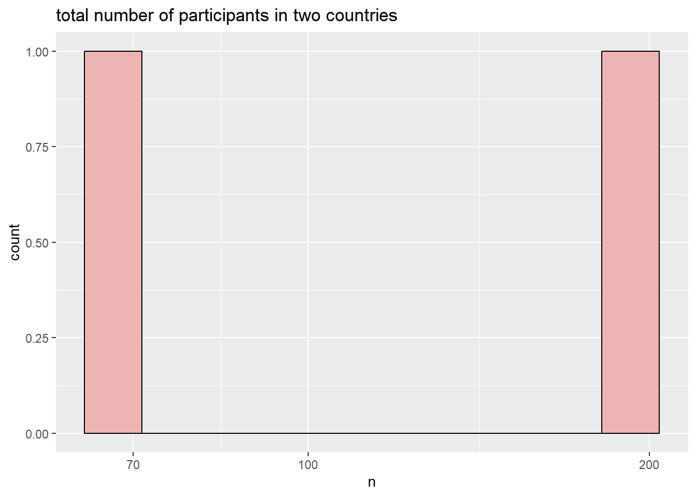
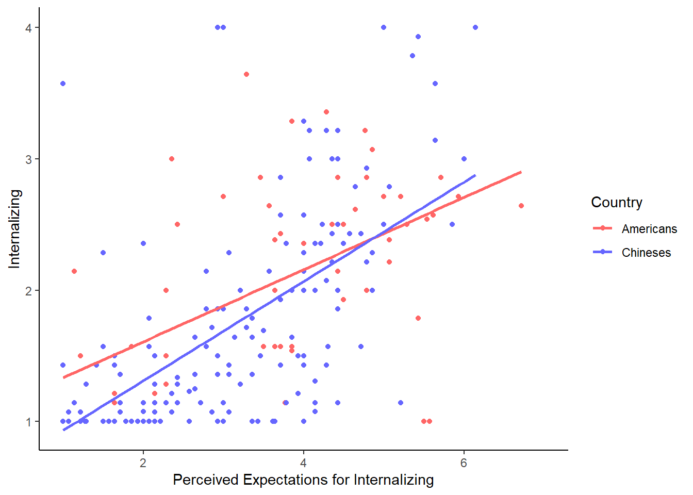
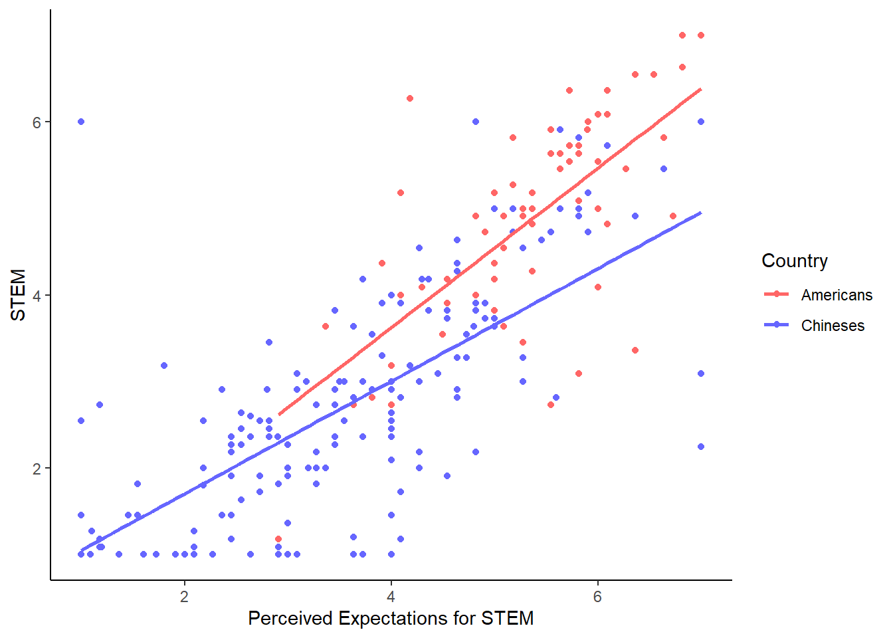
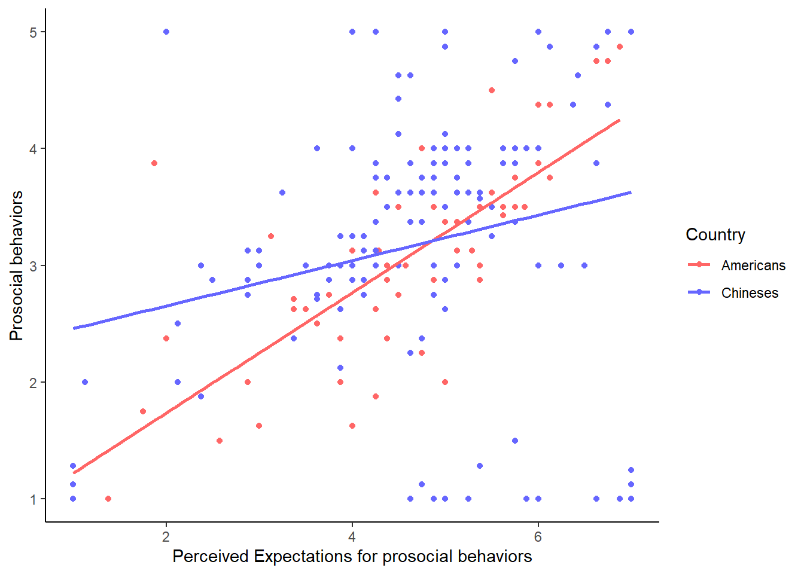

Portfolio 7
library(tidyverse)
library(dplyr)
library(haven)
teen_survey<- read_sav("teen_survey.sav")
tss<- read_sav("tss.sav")library(lme4)
library(merTools)
library(semPlot)
library(lavaan)
library(readxl)
library(dplyr)
library(haven)library(haven)
teen_survey_1 <- read_sav("teen_survey_1.sav")#rerun model with the updated dataset
model4<-"Parents_expectations=~exter +inter+ pros+ stem
Adolescents_behaviors=~int+ex+pr+st
Parents_expectations~Adolescents_behaviors"
#residual correlations
exter~~inter## exter ~ ~interpros~~stem## pros ~ ~stemint~~ex## int ~ ~expr~~int## pr ~ ~intpr~~ex## pr ~ ~exst~~pr## st ~ ~prst~~ex## st ~ ~exst~~int## st ~ ~intlibrary(lavaan)
library(readxl)
library(dplyr)
library(haven)
fit4<- sem(model4, data=teen_survey_1)
summary(fit4, standardized=TRUE, ci=TRUE, fit.measures=TRUE)## lavaan 0.6.14 ended normally after 35 iterations
##
## Estimator ML
## Optimization method NLMINB
## Number of model parameters 17
##
## Used Total
## Number of observations 230 255
##
## Model Test User Model:
##
## Test statistic 338.757
## Degrees of freedom 19
## P-value (Chi-square) 0.000
##
## Model Test Baseline Model:
##
## Test statistic 739.134
## Degrees of freedom 28
## P-value 0.000
##
## User Model versus Baseline Model:
##
## Comparative Fit Index (CFI) 0.550
## Tucker-Lewis Index (TLI) 0.337
##
## Loglikelihood and Information Criteria:
##
## Loglikelihood user model (H0) -2755.501
## Loglikelihood unrestricted model (H1) -2586.123
##
## Akaike (AIC) 5545.002
## Bayesian (BIC) 5603.450
## Sample-size adjusted Bayesian (SABIC) 5549.570
##
## Root Mean Square Error of Approximation:
##
## RMSEA 0.271
## 90 Percent confidence interval - lower 0.246
## 90 Percent confidence interval - upper 0.296
## P-value H_0: RMSEA <= 0.050 0.000
## P-value H_0: RMSEA >= 0.080 1.000
##
## Standardized Root Mean Square Residual:
##
## SRMR 0.150
##
## Parameter Estimates:
##
## Standard errors Standard
## Information Expected
## Information saturated (h1) model Structured
##
## Latent Variables:
## Estimate Std.Err z-value P(>|z|) ci.lower
## Parents_expectations =~
## exter 1.000 1.000
## inter 0.870 0.075 11.554 0.000 0.723
## pros 0.083 0.078 1.071 0.284 -0.069
## stem 0.379 0.090 4.202 0.000 0.202
## Adolescents_behaviors =~
## int 1.000 1.000
## ex 1.557 0.187 8.318 0.000 1.190
## pr 0.354 0.174 2.039 0.041 0.014
## st 1.046 0.273 3.836 0.000 0.511
## ci.upper Std.lv Std.all
##
## 1.000 1.172 0.853
## 1.018 1.019 0.716
## 0.236 0.098 0.075
## 0.556 0.444 0.290
##
## 1.000 0.433 0.549
## 1.924 0.674 0.791
## 0.694 0.153 0.144
## 1.580 0.452 0.280
##
## Regressions:
## Estimate Std.Err z-value P(>|z|) ci.lower ci.upper
## Parents_expectations ~
## Adlscnts_bhvrs 2.846 0.367 7.759 0.000 2.127 3.565
## Std.lv Std.all
##
## 1.051 1.051
##
## Variances:
## Estimate Std.Err z-value P(>|z|) ci.lower ci.upper
## .exter 0.513 0.090 5.679 0.000 0.336 0.690
## .inter 0.986 0.110 9.000 0.000 0.771 1.200
## .pros 1.668 0.156 10.715 0.000 1.363 1.973
## .stem 2.140 0.202 10.582 0.000 1.743 2.536
## .int 0.435 0.043 9.999 0.000 0.350 0.520
## .ex 0.272 0.044 6.185 0.000 0.186 0.358
## .pr 1.115 0.104 10.699 0.000 0.911 1.319
## .st 2.403 0.226 10.616 0.000 1.960 2.847
## .Parnts_xpcttns -0.143 0.129 -1.112 0.266 -0.396 0.109
## Adlscnts_bhvrs 0.187 0.044 4.220 0.000 0.100 0.274
## Std.lv Std.all
## 0.513 0.272
## 0.986 0.487
## 1.668 0.994
## 2.140 0.916
## 0.435 0.699
## 0.272 0.375
## 1.115 0.979
## 2.403 0.922
## -0.104 -0.104
## 1.000 1.000modindices(fit4, sort.=TRUE)## lhs op rhs mi epc sepc.lv sepc.all sepc.nox
## 49 stem ~~ st 139.302 1.791 1.791 0.790 0.790
## 37 inter ~~ int 59.367 0.425 0.425 0.649 0.649
## 31 exter ~~ int 35.623 -0.345 -0.345 -0.730 -0.730
## 44 pros ~~ pr 26.438 0.463 0.463 0.340 0.340
## 32 exter ~~ ex 23.050 0.400 0.400 1.070 1.070
## 38 inter ~~ ex 22.435 -0.343 -0.343 -0.663 -0.663
## 40 inter ~~ st 11.614 -0.390 -0.390 -0.253 -0.253
## 46 stem ~~ int 10.199 -0.212 -0.212 -0.220 -0.220
## 36 inter ~~ stem 8.817 -0.313 -0.313 -0.215 -0.215
## 41 pros ~~ stem 6.703 0.325 0.325 0.172 0.172
## 24 Adolescents_behaviors =~ exter 5.330 14.203 6.144 4.474 4.474
## 52 int ~~ st 4.315 -0.146 -0.146 -0.142 -0.142
## 51 int ~~ pr 3.741 0.091 0.091 0.131 0.131
## 29 exter ~~ pros 3.389 -0.143 -0.143 -0.155 -0.155
## 33 exter ~~ pr 2.679 -0.109 -0.109 -0.144 -0.144
## 45 pros ~~ st 2.278 0.200 0.200 0.100 0.100
## 35 inter ~~ pros 2.270 0.138 0.138 0.108 0.108
## 30 exter ~~ stem 1.884 0.126 0.126 0.120 0.120
## 39 inter ~~ pr 1.725 0.100 0.100 0.096 0.096
## 21 Parents_expectations =~ ex 1.203 2.012 2.358 2.767 2.767
## 48 stem ~~ pr 1.108 0.108 0.108 0.070 0.070
## 25 Adolescents_behaviors =~ inter 1.051 -4.168 -1.803 -1.267 -1.267
## 28 exter ~~ inter 0.748 0.173 0.173 0.244 0.244
## 53 ex ~~ pr 0.729 -0.035 -0.035 -0.063 -0.063
## 23 Parents_expectations =~ st 0.648 -0.610 -0.714 -0.442 -0.442
## 27 Adolescents_behaviors =~ stem 0.495 -1.255 -0.543 -0.355 -0.355
## 42 pros ~~ int 0.425 -0.038 -0.038 -0.044 -0.044
## 50 int ~~ ex 0.412 0.034 0.034 0.098 0.098
## 47 stem ~~ ex 0.402 -0.037 -0.037 -0.049 -0.049
## 55 pr ~~ st 0.342 -0.064 -0.064 -0.039 -0.039
## 43 pros ~~ ex 0.295 -0.027 -0.027 -0.041 -0.041
## 54 ex ~~ st 0.181 0.027 0.027 0.034 0.034
## 34 exter ~~ st 0.089 0.030 0.030 0.027 0.027
## 26 Adolescents_behaviors =~ pros 0.014 -0.179 -0.077 -0.060 -0.060
## 20 Parents_expectations =~ int 0.009 0.066 0.078 0.098 0.098
## 22 Parents_expectations =~ pr 0.004 0.032 0.037 0.035 0.035inspect(fit4, what="std")## $lambda
## Prnts_ Adlsc_
## exter 0.853 0.000
## inter 0.716 0.000
## pros 0.075 0.000
## stem 0.290 0.000
## int 0.000 0.549
## ex 0.000 0.791
## pr 0.000 0.144
## st 0.000 0.280
##
## $theta
## exter inter pros stem int ex pr st
## exter 0.272
## inter 0.000 0.487
## pros 0.000 0.000 0.994
## stem 0.000 0.000 0.000 0.916
## int 0.000 0.000 0.000 0.000 0.699
## ex 0.000 0.000 0.000 0.000 0.000 0.375
## pr 0.000 0.000 0.000 0.000 0.000 0.000 0.979
## st 0.000 0.000 0.000 0.000 0.000 0.000 0.000 0.922
##
## $psi
## Prnts_ Adlsc_
## Parents_expectations -0.104
## Adolescents_behaviors 0.000 1.000
##
## $beta
## Prnts_ Adlsc_
## Parents_expectations 0 1.051
## Adolescents_behaviors 0 0.000fitmeasures(fit4)## npar fmin chisq
## 17.000 0.736 338.757
## df pvalue baseline.chisq
## 19.000 0.000 739.134
## baseline.df baseline.pvalue cfi
## 28.000 0.000 0.550
## tli nnfi rfi
## 0.337 0.337 0.325
## nfi pnfi ifi
## 0.542 0.368 0.556
## rni logl unrestricted.logl
## 0.550 -2755.501 -2586.123
## aic bic ntotal
## 5545.002 5603.450 230.000
## bic2 rmsea rmsea.ci.lower
## 5549.570 0.271 0.246
## rmsea.ci.upper rmsea.ci.level rmsea.pvalue
## 0.296 0.900 0.000
## rmsea.close.h0 rmsea.notclose.pvalue rmsea.notclose.h0
## 0.050 1.000 0.080
## rmr rmr_nomean srmr
## 0.322 0.322 0.150
## srmr_bentler srmr_bentler_nomean crmr
## 0.150 0.150 0.170
## crmr_nomean srmr_mplus srmr_mplus_nomean
## 0.170 0.150 0.150
## cn_05 cn_01 gfi
## 21.466 25.572 0.774
## agfi pgfi mfi
## 0.572 0.409 0.499
## ecvi
## 1.621parameterestimates(fit4, standardized = TRUE)## lhs op rhs est se z pvalue
## 1 Parents_expectations =~ exter 1.000 0.000 NA NA
## 2 Parents_expectations =~ inter 0.870 0.075 11.554 0.000
## 3 Parents_expectations =~ pros 0.083 0.078 1.071 0.284
## 4 Parents_expectations =~ stem 0.379 0.090 4.202 0.000
## 5 Adolescents_behaviors =~ int 1.000 0.000 NA NA
## 6 Adolescents_behaviors =~ ex 1.557 0.187 8.318 0.000
## 7 Adolescents_behaviors =~ pr 0.354 0.174 2.039 0.041
## 8 Adolescents_behaviors =~ st 1.046 0.273 3.836 0.000
## 9 Parents_expectations ~ Adolescents_behaviors 2.846 0.367 7.759 0.000
## 10 exter ~~ exter 0.513 0.090 5.679 0.000
## 11 inter ~~ inter 0.986 0.110 9.000 0.000
## 12 pros ~~ pros 1.668 0.156 10.715 0.000
## 13 stem ~~ stem 2.140 0.202 10.582 0.000
## 14 int ~~ int 0.435 0.043 9.999 0.000
## 15 ex ~~ ex 0.272 0.044 6.185 0.000
## 16 pr ~~ pr 1.115 0.104 10.699 0.000
## 17 st ~~ st 2.403 0.226 10.616 0.000
## 18 Parents_expectations ~~ Parents_expectations -0.143 0.129 -1.112 0.266
## 19 Adolescents_behaviors ~~ Adolescents_behaviors 0.187 0.044 4.220 0.000
## ci.lower ci.upper std.lv std.all std.nox
## 1 1.000 1.000 1.172 0.853 0.853
## 2 0.723 1.018 1.019 0.716 0.716
## 3 -0.069 0.236 0.098 0.075 0.075
## 4 0.202 0.556 0.444 0.290 0.290
## 5 1.000 1.000 0.433 0.549 0.549
## 6 1.190 1.924 0.674 0.791 0.791
## 7 0.014 0.694 0.153 0.144 0.144
## 8 0.511 1.580 0.452 0.280 0.280
## 9 2.127 3.565 1.051 1.051 1.051
## 10 0.336 0.690 0.513 0.272 0.272
## 11 0.771 1.200 0.986 0.487 0.487
## 12 1.363 1.973 1.668 0.994 0.994
## 13 1.743 2.536 2.140 0.916 0.916
## 14 0.350 0.520 0.435 0.699 0.699
## 15 0.186 0.358 0.272 0.375 0.375
## 16 0.911 1.319 1.115 0.979 0.979
## 17 1.960 2.847 2.403 0.922 0.922
## 18 -0.396 0.109 -0.104 -0.104 -0.104
## 19 0.100 0.274 1.000 1.000 1.000fitted(fit4)## $cov
## exter inter pros stem int ex pr st
## exter 1.885
## inter 1.194 2.025
## pros 0.114 0.100 1.677
## stem 0.520 0.453 0.043 2.337
## int 0.533 0.463 0.044 0.202 0.622
## ex 0.829 0.722 0.069 0.314 0.291 0.726
## pr 0.189 0.164 0.016 0.071 0.066 0.103 1.139
## st 0.557 0.485 0.046 0.211 0.196 0.305 0.069 2.608residuals(fit4)## $type
## [1] "raw"
##
## $cov
## exter inter pros stem int ex pr st
## exter 0.000
## inter 0.009 0.000
## pros -0.088 0.117 0.000
## stem 0.072 -0.259 0.320 0.000
## int -0.099 0.259 -0.036 -0.198 0.000
## ex 0.037 -0.077 -0.022 -0.033 0.006 0.000
## pr -0.060 0.083 0.461 0.105 0.086 -0.028 0.000
## st 0.005 -0.318 0.196 1.731 -0.135 0.019 -0.063 0.000fitmeasures(fit4)## npar fmin chisq
## 17.000 0.736 338.757
## df pvalue baseline.chisq
## 19.000 0.000 739.134
## baseline.df baseline.pvalue cfi
## 28.000 0.000 0.550
## tli nnfi rfi
## 0.337 0.337 0.325
## nfi pnfi ifi
## 0.542 0.368 0.556
## rni logl unrestricted.logl
## 0.550 -2755.501 -2586.123
## aic bic ntotal
## 5545.002 5603.450 230.000
## bic2 rmsea rmsea.ci.lower
## 5549.570 0.271 0.246
## rmsea.ci.upper rmsea.ci.level rmsea.pvalue
## 0.296 0.900 0.000
## rmsea.close.h0 rmsea.notclose.pvalue rmsea.notclose.h0
## 0.050 1.000 0.080
## rmr rmr_nomean srmr
## 0.322 0.322 0.150
## srmr_bentler srmr_bentler_nomean crmr
## 0.150 0.150 0.170
## crmr_nomean srmr_mplus srmr_mplus_nomean
## 0.170 0.150 0.150
## cn_05 cn_01 gfi
## 21.466 25.572 0.774
## agfi pgfi mfi
## 0.572 0.409 0.499
## ecvi
## 1.621modificationindices(fit4, sort. = TRUE)## lhs op rhs mi epc sepc.lv sepc.all sepc.nox
## 49 stem ~~ st 139.302 1.791 1.791 0.790 0.790
## 37 inter ~~ int 59.367 0.425 0.425 0.649 0.649
## 31 exter ~~ int 35.623 -0.345 -0.345 -0.730 -0.730
## 44 pros ~~ pr 26.438 0.463 0.463 0.340 0.340
## 32 exter ~~ ex 23.050 0.400 0.400 1.070 1.070
## 38 inter ~~ ex 22.435 -0.343 -0.343 -0.663 -0.663
## 40 inter ~~ st 11.614 -0.390 -0.390 -0.253 -0.253
## 46 stem ~~ int 10.199 -0.212 -0.212 -0.220 -0.220
## 36 inter ~~ stem 8.817 -0.313 -0.313 -0.215 -0.215
## 41 pros ~~ stem 6.703 0.325 0.325 0.172 0.172
## 24 Adolescents_behaviors =~ exter 5.330 14.203 6.144 4.474 4.474
## 52 int ~~ st 4.315 -0.146 -0.146 -0.142 -0.142
## 51 int ~~ pr 3.741 0.091 0.091 0.131 0.131
## 29 exter ~~ pros 3.389 -0.143 -0.143 -0.155 -0.155
## 33 exter ~~ pr 2.679 -0.109 -0.109 -0.144 -0.144
## 45 pros ~~ st 2.278 0.200 0.200 0.100 0.100
## 35 inter ~~ pros 2.270 0.138 0.138 0.108 0.108
## 30 exter ~~ stem 1.884 0.126 0.126 0.120 0.120
## 39 inter ~~ pr 1.725 0.100 0.100 0.096 0.096
## 21 Parents_expectations =~ ex 1.203 2.012 2.358 2.767 2.767
## 48 stem ~~ pr 1.108 0.108 0.108 0.070 0.070
## 25 Adolescents_behaviors =~ inter 1.051 -4.168 -1.803 -1.267 -1.267
## 28 exter ~~ inter 0.748 0.173 0.173 0.244 0.244
## 53 ex ~~ pr 0.729 -0.035 -0.035 -0.063 -0.063
## 23 Parents_expectations =~ st 0.648 -0.610 -0.714 -0.442 -0.442
## 27 Adolescents_behaviors =~ stem 0.495 -1.255 -0.543 -0.355 -0.355
## 42 pros ~~ int 0.425 -0.038 -0.038 -0.044 -0.044
## 50 int ~~ ex 0.412 0.034 0.034 0.098 0.098
## 47 stem ~~ ex 0.402 -0.037 -0.037 -0.049 -0.049
## 55 pr ~~ st 0.342 -0.064 -0.064 -0.039 -0.039
## 43 pros ~~ ex 0.295 -0.027 -0.027 -0.041 -0.041
## 54 ex ~~ st 0.181 0.027 0.027 0.034 0.034
## 34 exter ~~ st 0.089 0.030 0.030 0.027 0.027
## 26 Adolescents_behaviors =~ pros 0.014 -0.179 -0.077 -0.060 -0.060
## 20 Parents_expectations =~ int 0.009 0.066 0.078 0.098 0.098
## 22 Parents_expectations =~ pr 0.004 0.032 0.037 0.035 0.035semPaths(fit4, what="paths", whatLables="par", rotation=2)
fitmeasures(fit4)## npar fmin chisq
## 17.000 0.736 338.757
## df pvalue baseline.chisq
## 19.000 0.000 739.134
## baseline.df baseline.pvalue cfi
## 28.000 0.000 0.550
## tli nnfi rfi
## 0.337 0.337 0.325
## nfi pnfi ifi
## 0.542 0.368 0.556
## rni logl unrestricted.logl
## 0.550 -2755.501 -2586.123
## aic bic ntotal
## 5545.002 5603.450 230.000
## bic2 rmsea rmsea.ci.lower
## 5549.570 0.271 0.246
## rmsea.ci.upper rmsea.ci.level rmsea.pvalue
## 0.296 0.900 0.000
## rmsea.close.h0 rmsea.notclose.pvalue rmsea.notclose.h0
## 0.050 1.000 0.080
## rmr rmr_nomean srmr
## 0.322 0.322 0.150
## srmr_bentler srmr_bentler_nomean crmr
## 0.150 0.150 0.170
## crmr_nomean srmr_mplus srmr_mplus_nomean
## 0.170 0.150 0.150
## cn_05 cn_01 gfi
## 21.466 25.572 0.774
## agfi pgfi mfi
## 0.572 0.409 0.499
## ecvi
## 1.621#still not a good fitLoading Required Packages Now, let’s load the required packages.
library(tidyverse)
library(lme4)
library(lmerTest)##
## Attaching package: 'lmerTest'## The following object is masked from 'package:lme4':
##
## lmer## The following object is masked from 'package:stats':
##
## stepLoading the Dataset For this lab, we will use a built-in dataset from the lme4 package called sleepstudy. This dataset contains information about the reaction times of subjects who participated in a sleep deprivation study.
data("sleepstudy")
head(sleepstudy)## Reaction Days Subject
## 1 249.5600 0 308
## 2 258.7047 1 308
## 3 250.8006 2 308
## 4 321.4398 3 308
## 5 356.8519 4 308
## 6 414.6901 5 308Data Exploration Let’s explore the structure of the dataset.
glimpse(sleepstudy)## Rows: 180
## Columns: 3
## $ Reaction <dbl> 249.5600, 258.7047, 250.8006, 321.4398, 356.8519, 414.6901, 3…
## $ Days <dbl> 0, 1, 2, 3, 4, 5, 6, 7, 8, 9, 0, 1, 2, 3, 4, 5, 6, 7, 8, 9, 0…
## $ Subject <fct> 308, 308, 308, 308, 308, 308, 308, 308, 308, 308, 309, 309, 3…Visualizing the Data Before building the multilevel model, it’s helpful to visualize the data. Let’s plot the reaction times against the days of sleep deprivation, with each subject represented by a different color.
sleepstudy %>%
ggplot(aes(x = Days, y = Reaction, group = Subject, color = factor(Subject))) +
geom_line() +
labs(title = "Reaction Time vs Days of Sleep Deprivation",
x = "Days of Sleep Deprivation",
y = "Reaction Time (ms)",
color = "Subject")
Building the Multilevel Model Now we will build a multilevel model using the lmer() function from the lme4 package. The model will predict the reaction time based on the number of days of sleep deprivation, while accounting for the random effects of subjects.
multilevel_model <- lmer(Reaction ~ Days + (1|Subject), data = sleepstudy)
summary(multilevel_model)## Linear mixed model fit by REML. t-tests use Satterthwaite's method [
## lmerModLmerTest]
## Formula: Reaction ~ Days + (1 | Subject)
## Data: sleepstudy
##
## REML criterion at convergence: 1786.5
##
## Scaled residuals:
## Min 1Q Median 3Q Max
## -3.2257 -0.5529 0.0109 0.5188 4.2506
##
## Random effects:
## Groups Name Variance Std.Dev.
## Subject (Intercept) 1378.2 37.12
## Residual 960.5 30.99
## Number of obs: 180, groups: Subject, 18
##
## Fixed effects:
## Estimate Std. Error df t value Pr(>|t|)
## (Intercept) 251.4051 9.7467 22.8102 25.79 <0.0000000000000002 ***
## Days 10.4673 0.8042 161.0000 13.02 <0.0000000000000002 ***
## ---
## Signif. codes: 0 '***' 0.001 '**' 0.01 '*' 0.05 '.' 0.1 ' ' 1
##
## Correlation of Fixed Effects:
## (Intr)
## Days -0.371Model Interpretation The output provides information on the fixed effects, random effects, and model fit. We can interpret the fixed effects coefficients and significance levels to understand the relationship between reaction time and days of sleep deprivation.
Model Diagnostics We can perform model diagnostics using the plot() function, which will generate residual plots.
plot(multilevel_model)
Conclusion In this lab, you learned how to perform multilevel modeling using R and the Tidyverse package. You explored a real dataset, visualized the data, built a multilevel model, and interpreted the results.
#does not feel like my data can conduct a multilevel modeling test.
teen_survey_1$country <- as.factor(teen_survey_1$country)modex <- lm(ex ~ exter * country, teen_survey_1)
summary(modex)##
## Call:
## lm(formula = ex ~ exter * country, data = teen_survey_1)
##
## Residuals:
## Min 1Q Median 3Q Max
## -2.40508 -0.27304 -0.06482 0.28909 1.91533
##
## Coefficients:
## Estimate Std. Error t value Pr(>|t|)
## (Intercept) 0.82111 0.16805 4.886 0.00000187 ***
## exter 0.46511 0.04275 10.879 < 0.0000000000000002 ***
## country1 -0.06886 0.19507 -0.353 0.724
## exter:country1 -0.04424 0.05766 -0.767 0.444
## ---
## Signif. codes: 0 '***' 0.001 '**' 0.01 '*' 0.05 '.' 0.1 ' ' 1
##
## Residual standard error: 0.5595 on 242 degrees of freedom
## (9 observations deleted due to missingness)
## Multiple R-squared: 0.5737, Adjusted R-squared: 0.5684
## F-statistic: 108.5 on 3 and 242 DF, p-value: < 0.00000000000000022#ggplot(teen_survey_1, aes(ex ~ exter * country, color = factor(country))) +
# geom_point() +
# geom_smooth(method = "lm", se = FALSE) +
# scale_color_manual(name = "Country", labels = c("Americans", "Chineses"), values = c("#FF6666", "#6666FF")) +
# labs(x="Perceived Expectations for Externalizing", y="Externalizing") +
# theme_classic()
# warning showed: Did you mistype the name of a data column or forget to add `after_stat()`? --don't know how to solve it.teen_survey_1 %>% group_by(country) %>%
summarize(n = n()) %>%
ggplot(aes(n)) +
geom_histogram(fill = "rosybrown2", color = "black", bins = 10) +
scale_x_log10() +
ggtitle("total number of participants in two countries")
#okay, kind of weird but the "country can use as a factor)ggplot(teen_survey_1, aes(x=exter, y=ex, color = factor(country))) +
geom_point() +
geom_smooth(method = "lm", se = FALSE) +
scale_color_manual(name = "Country", labels = c("Americans", "Chineses"), values = c("#FF6666", "#6666FF")) +
labs(x="Perceived Expectations for Externalizing", y="Externalizing") +
theme_classic()## `geom_smooth()` using formula = 'y ~ x'
#yeah pretty stupid mistake...ggplot(teen_survey_1, aes(x=inter, y=int, color = factor(country))) +
geom_point() +
geom_smooth(method = "lm", se = FALSE) +
scale_color_manual(name = "Country", labels = c("Americans", "Chineses"), values = c("#FF6666", "#6666FF")) +
labs(x="Perceived Expectations for Internalizing", y="Internalizing") +
theme_classic()## `geom_smooth()` using formula = 'y ~ x'
#looks like the perceived parents' expectations for internalizing predict actual internalizing for Chinese more compared to U.S. adolescents.ggplot(teen_survey_1, aes(x=stem, y=st, color = factor(country))) +
geom_point() +
geom_smooth(method = "lm", se = FALSE) +
scale_color_manual(name = "Country", labels = c("Americans", "Chineses"), values = c("#FF6666", "#6666FF")) +
labs(x="Perceived Expectations for STEM", y="STEM") +
theme_classic()## `geom_smooth()` using formula = 'y ~ x'
#looks like the perceived parents' expectations for STEM motivations predict actual STEM motivations for Chinese more compared to U.S. adolescents.
#also, the Chinese reported lower perceived expectations for STEM motivations and adolescents' actual STEM motivations.ggplot(teen_survey_1, aes(x=pros, y=pr, color = factor(country))) +
geom_point() +
geom_smooth(method = "lm", se = FALSE) +
scale_color_manual(name = "Country", labels = c("Americans", "Chineses"), values = c("#FF6666", "#6666FF")) +
labs(x="Perceived Expectations for prosocial behaviors", y="Prosocial behaviors") +
theme_classic()## `geom_smooth()` using formula = 'y ~ x'